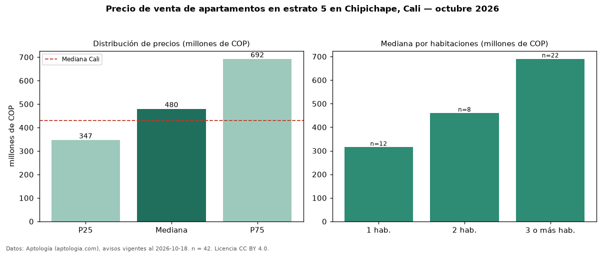

Precio de venta de apartamentos en estrato 5 en Chipichape, Cali — octubre 2026
En Chipichape, Cali, la mediana de precio de venta de apartamentos en estrato 5 es COP 480 millones, según 42 avisos vigentes. Frente a la mediana de toda la vivienda de estrato 5 de Chipichape (COP 355 millones, n = 71), queda 35 % por encima; este segmento reúne el 59 % de esos avisos. Por metro cuadrado, la mediana es COP 6,79 millones/m² (n = 42), 25 % por debajo del conjunto de referencia (COP 9,06 millones/m²). El área mediana anunciada es 70 m². El segmento con más oferta es el de 3 o más habitaciones (22 avisos, mediana COP 690 millones); pasar de 1 habitación a 3 o más habitaciones cambia la mediana +119 %. La administración mediana declarada es COP 797.500 al mes (n = 32). La mitad central de los avisos va de COP 347 millones a COP 692 millones (razón 2,0), una dispersión moderada. La mediana de todos los apartamentos en venta de Cali es COP 430 millones (+12 % de diferencia). Datos: Aptología (aptologia.com), CC BY 4.0 — https://www.aptologia.com/venta/cali/chipichape. Archivos: PDF, CSV con las cifras y gráfica PNG.

| Avisos únicos | 42 |
|---|---|
| Percentil 25 | COP 347.000.000 |
| Mediana | COP 480.000.000 |
| Percentil 75 | COP 692.500.000 |
| Mediana por m² | COP 6.791.044 |
Fuente: avisos vigentes de portales inmobiliarios recopilados por Aptología, deduplicados (mínimo 30 avisos únicos por celda). Precios pedidos, no cerrados. Fecha: 2026-10-18.